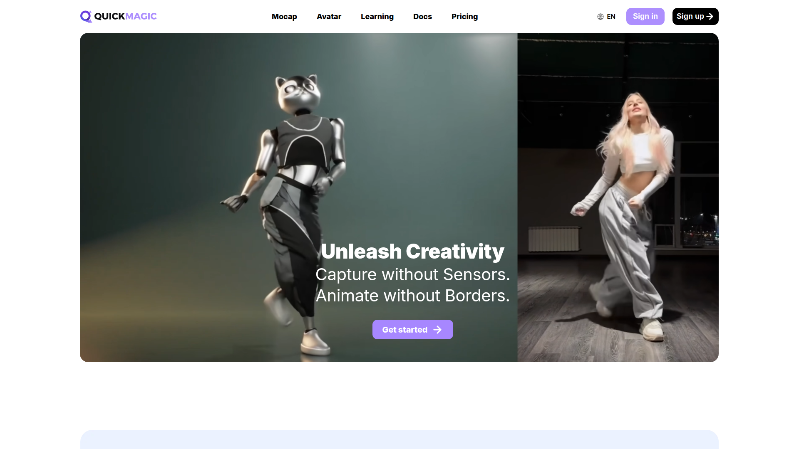

> 調研日期：2026-06-19
> 官網：https://www.quickmagic.ai
AI 動捕工具，主打自動關鍵幀偵測，將影片轉換為動畫資料。支援 FBX/Mixamo/BIP/UE 格式匯出，相容 3DS Max、MotionBuilder、Maya。

Free (50 V-Coins/月) | Basic $29/月 | Pro $49.99/月
🟡 備選方案 — 自動關鍵幀是亮點，多格式匯出適合 3DS Max 用戶。
MotionLab Research · 2026-06-19